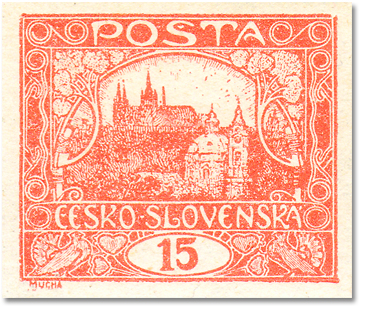
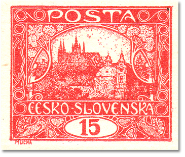
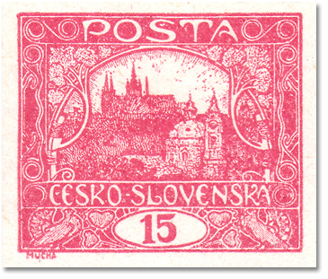
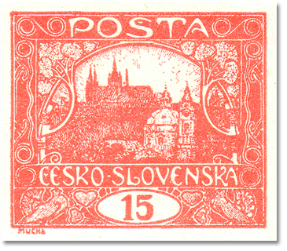

Farben und Farbtöne
Die Farbtöne des Wertes 15h sind bis heute Gegenstand ernsthafter Diskussionen. Die Kataloge unterscheiden fünf Grundfarbtöne; ihr Vorkommen ist an Gruppen von Druckplatten gebunden.
| Farbton | POFIS | MERKUR | Druckplatten |
|---|---|---|---|
| ziegelrot | 7 | 7 | Platten I, II, VII |
| braunrot | 7a | 7a | Platten I, II, VII |
| rot | 7b | 7b | Platten I, II, VII |
| karmin / karminrot | 7c | 7c | Platten V, VI |
| zinnoberrot | 7d | — | Platten III–VI |





Karmin 7c — ein strittiger Farbton? (eine Überlegung)
Die Kataloge führen Karmin (7c) als eigenständigen Farbton der Druckplatten V und VI. In der Praxis ist dieser Farbton jedoch in ungebrauchtem Zustand nur ganz ausnahmsweise belegt — die überwiegende Mehrheit der „karminen“ Stücke, die durch Sammlungen und Auktionen gehen, ist gestempelt.
Ich vermute, die Erklärung ist prosaisch: Der Farbstoff der zinnoberroten Drucke ist wärmeempfindlich. Wird ein bestimmter Farbton einer zinnoberroten Marke höherer Temperatur ausgesetzt — typischerweise beim Ablösen der Marken von Belegen in heißem Wasser —, schlägt die Farbe nach Karmin um. Dazu passt auch, dass Karmin fast ausschließlich auf gebrauchten, also in der Regel irgendwann abgelösten Marken vorkommt.
Trifft diese Überlegung zu, wäre „Karmin“ kein eigenständiger Druckfarbton, sondern durch Wärme sekundär veränderter Zinnober. Karminfarbene Stücke sind daher vorsichtig zu beurteilen — insbesondere bei ungebrauchten Exemplaren mit angegebenem Farbton 7c empfehle ich den Vergleich mit glaubwürdig belegtem Material. Über Meinungen und Material von Kollegen, die diese Hypothese bestätigen oder widerlegen, freue ich mich (pepa.matousek@gmail.com).
— Überlegung des Autors, Josef Matoušek
Praktischer Hinweis
Die Bestimmung des Farbtons ist am zuverlässigsten in Verbindung mit der Bestimmung der Druckplatte: Eine Marke aus den Platten III–VI kann nicht ziegelrot 7 sein, eine Marke aus den Platten I/II/VII kann nicht zinnoberrot 7d sein. Die Plattenmerkmale der einzelnen Felder finden Sie in der Positionsgalerie.